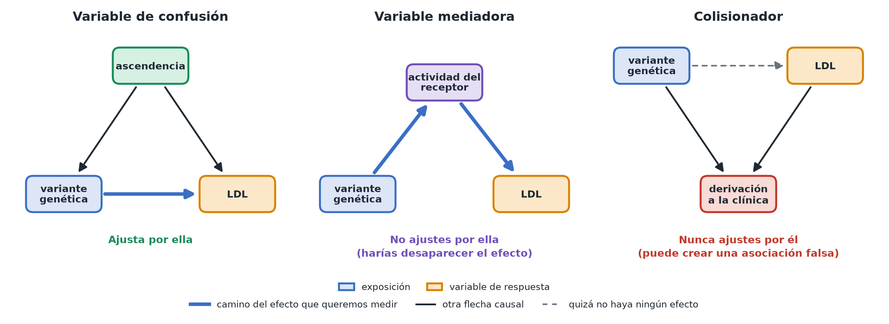

Diagramas causales
En pocas palabras: un diagrama causal es un dibujo sencillo, con cajas y flechas, de lo que crees que causa qué. Convierte una duda difusa («¿podría explicarlo otra cosa?») en una imagen concreta y comprobable.
Los tres papeles que puede desempeñar una variable
Supón que Mia estudia si llevar una variante genética afecta al colesterol LDL. Una tercera variable, la ascendencia (el trasfondo genético de una persona), podría desempeñar varios papeles:
- Variable de confusión (confusor) (confounder): la ascendencia afecta tanto a qué variantes lleva una persona (las frecuencias de las variantes difieren entre poblaciones) como directamente al colesterol LDL (a través de la dieta y el entorno compartidos dentro de una población). Se dibuja con flechas que van de la ascendencia a la variante y al LDL. Debes ajustar por las variables de confusión; de lo contrario, su influencia se confunde con el efecto de la variante.
- Mediadora (mediator): supón que la variante actúa reduciendo la actividad del receptor de LDL en el hígado, lo que a su vez eleva el LDL en sangre. La actividad del receptor está en el camino de la variante al LDL (variante → actividad del receptor → LDL). No ajustes por las mediadoras si quieres el efecto total de la variante: hacerlo «explicaría» justo el mecanismo que intentas medir.
- Colisionador (collider): imagina una variable que es una consecuencia tanto de llevar la variante como de tener el LDL alto; por ejemplo, «el paciente fue derivado a la clínica de lípidos» ocurre más a menudo en portadores y en personas con LDL alto. No ajustes nunca por colisionadores: condicionar por algo causado tanto por tu exposición como por tu resultado (por ejemplo, estudiando solo a los pacientes de la clínica) puede fabricar una asociación falsa entre ellos, aunque no exista ninguna.

Mezclar estos tres papeles es una fuente habitual de errores en el análisis causal: «controlar por todo lo disponible» no es una opción por defecto segura.
Cómo construir uno en la práctica
- Anota el resultado y la exposición o tratamiento que te interesan.
- Para cada una de las demás variables que hayas registrado, pregúntate: ¿es causa de la exposición, causa del resultado, de ambos (variable de confusión), consecuencia de la exposición (posible mediadora) o consecuencia de ambos (posible colisionador)?
- Pregúntate por el orden temporal: las causas deben ir antes que sus efectos, lo que ayuda a descartar direcciones imposibles de las flechas.
- Pregúntate si hay algo que no mediste y que aun así crees que afecta a la exposición, al resultado o a ambos. Estas «variables de confusión no medidas» también van en el diagrama, aunque no tengas datos de ellas, de modo que el supuesto de que no importan (si lo haces) quede explícito en lugar de darse por sentado en silencio.
Por qué importa incluso con un buen modelo de regresión
Una regresión solo puede ajustar por las variables que le das. Si por error le das una mediadora o un colisionador, o si una variable de confusión importante nunca llega al diagrama (ni al conjunto de datos), el modelo producirá un número de aspecto fiable que aun así es incorrecto. El diagrama es lo que te dice qué variables van en el modelo y cuáles no; las matemáticas de la regresión por sí solas no pueden decírtelo.